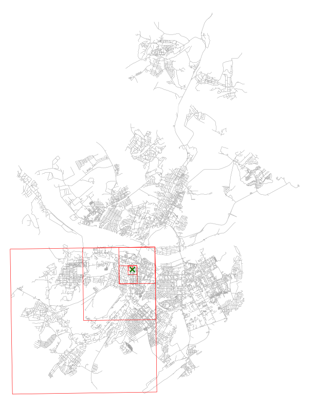
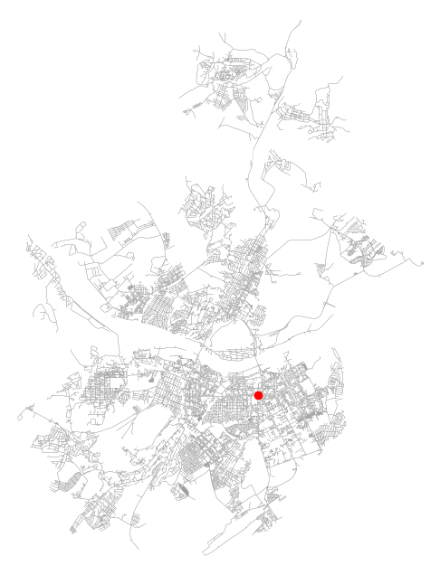
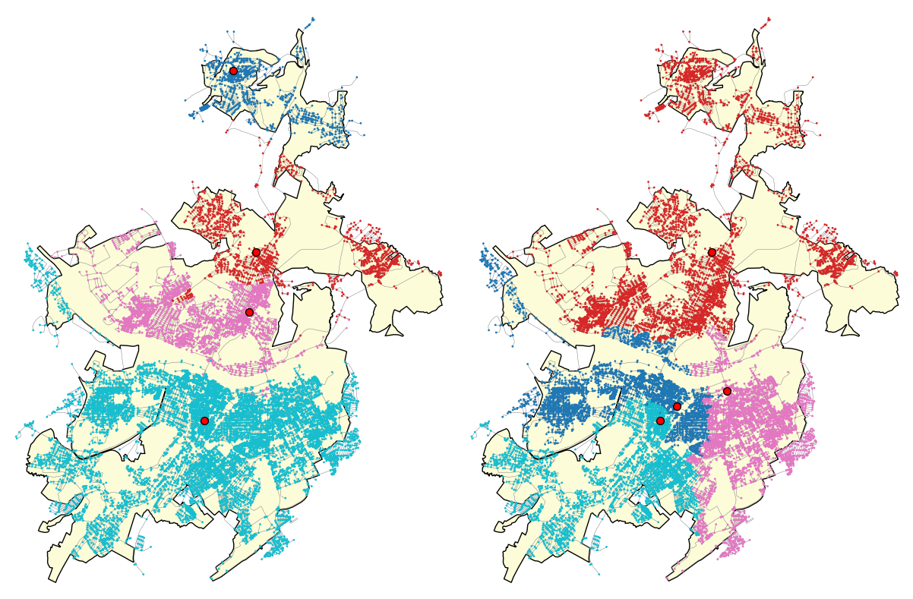

import networkx as nx
import numpy as np
import osmnx as ox
import geopandas as gpd
import matplotlib.pyplot as plt
import shapely20 Разработка пользовательских функций
По желанию пользователь может разрабатывать и тестировать новые алгоритмы и функции.
Для этого необходимо создать класс-функцию наследующую от соответсвующего базового класса-функции (в зависимости от поставленной задачи)
В Генезис реализованы следующие базовые классы:
| Базовый Класс-функция | Описание |
|---|---|
MetricBase |
Метрики |
StateBase |
Состояние |
BestPointsBase |
Алгоритм BLP |
MCLPBase |
Алгоритм MCLP |
StopCaseBase |
Функция остановки |
PointSelectorBase |
Селектор новых узлов |
LSCPBase |
Алгоритм LSCP |
20.1 Пример реализации пользовательского алгоритма BLP
В качестве примера рассмотри создание алгоритма поиска лучшего узла графа методом рекурсивного деления области на квадраты.
Логика алгоритма будет следующая:
Дан граф улично-дорожной сети в формате networkx.MultiDiGraph, веса ребер определены полем travel_time и представляют время следования по участку дороги в минутах.
Алгоритм:
- Граф проецируется в локальную систему координат при помощи
osmnx.project_graph - Определяется основной прямоугольник
Pв который вписаны все узлы графа - Основной прямоугольник разбивается на некоторое количество квадратов меньшего размера. Размер стороны квадратов определется как половина наименьшего измерения прямоугольника
P - В пределах каждого из меньших квадратов определяется
nузлов, для каждого из них при помощиgenesis.Best_points.NodeMetricопределяется значение метрики времени среднего времени прибытияgenesis.metrics.ArrivalTime - Выбирается квадрат в пределах которого находится узел с наилучшей метрикой
- Если в пределах квадрата содержится больше узлов чем некоторое минимальное значение
n_min_countзадаваемое как гиперпараметр алгоритма, то шаги 4,5,6 повторяются - Алгоритм возвращает узел с лучшей метрикой
Алгоритм должен реализован как наследник класса genesis.core.BestPointsBase и реализует соответсвующий интерфейс.
Подключение необходимых библиотек
Загрузка исходных данных
from graphs.speeds import set_graph_travel_times, kmh_to_mm
from fire_units.settings import DEFAULT_SPEEDS
# 1. Загрузка исходных данных
## Загрузка ГДС
G = ox.load_graphml('data/kemerovo/gds.ml')
## Установка скоростного режима
set_graph_travel_times(
G,
speeds=DEFAULT_SPEEDS,
morph_function = kmh_to_mm)
## Упрощение графа (уменьшение количества узлов)
G = ox.simplification.simplify_graph(G)
## Загрузка границ населенного пункта
borders = gpd.read_file('data/kemerovo/borders.gpkg')Реализация алгоритма
import random
import math
from genesis.core import BestPointsBase, StateBase, MetricBase
from genesis.best_points import NodeMetric
from genesis.metrics import ArrivalTime
from genesis.states import FirstArrivalUnitState
class BestNodeSquareZoom(BestPointsBase):
"""
Поиск лучшего узла графа методом рекурсивного деления области на квадраты.
1. Проекция графа в локальную систему координат.
2. Определение главного прямоугольника, в который вписаны узлы графа.
3. Разбиение прямоугольника на квадраты со стороной min(width, height)/2.
4. В каждом квадрате случайная выборка до n узлов и вычисление метрики.
5. Выбор квадрата с узлом наилучшей метрики и рекурсия, пока количество узлов в квадрате не <= n_min_count.
"""
def __init__(self, state_function: StateBase,
metric_function: MetricBase,
n_samples: int = 10,
n_min_count: int = 5,
**kwargs):
"""
`state_function`: StateBase — функция расчета состояния окружения.
`metric_function`: MetricBase — функция расчета метрики.
`n_samples`: int — максимальное число узлов для оценки в каждом квадрате.
`n_min_count`: int — минимальное число узлов для останова рекурсии.
"""
self.n_samples = n_samples
self.n_min_count = n_min_count
super().__init__(state_function, metric_function, **kwargs)
def __call__(self, env: nx.Graph,
area=None,
start_point: int = None,
points_list: set = None,
**kwargs) -> tuple[int | None, float | None]:
"""
`env`: MultiDiGraph — граф улично-дорожной сети.
`area`: pandas.Series — маска узлов графа для расчёта доступности (см. NodeMetric).
`start_point`: не используется.
`points_list`: set — начальный набор узлов-кандидатов.
Возвращает `(best_node, best_metric)`.
"""
# Подготовка исходных узлов
if points_list is None:
current_nodes = list(env.nodes())
else:
current_nodes = list(points_list)
# Проекция графа
# Проекция графа только если он в географической системе координат
if env.graph['crs'] == 'epsg:4326':
G = ox.project_graph(env)
else:
G = env
node_metric_fn = NodeMetric(self.state_function, self.metric_function)
best_node = None
best_metric = None
level = 1
best_squares = []
while True:
# Ограничиваем текущие узлы маской area, если задана
if area is not None:
current_nodes = [u for u in current_nodes if area.get(u, False)]
if not current_nodes:
return None, None
# Координаты узлов
xs = [G.nodes[u]['x'] for u in current_nodes]
ys = [G.nodes[u]['y'] for u in current_nodes]
x_min, x_max = min(xs), max(xs)
y_min, y_max = min(ys), max(ys)
dx, dy = x_max - x_min, y_max - y_min
size = min(dx, dy) / 2
# Создание квадратов
nx_squares = int(math.ceil(dx / size))
ny_squares = int(math.ceil(dy / size))
squares = []
for i in range(nx_squares):
for j in range(ny_squares):
x0, y0 = x_min + i * size, y_min + j * size
squares.append((x0, y0, x0 + size, y0 + size))
# Оценка квадратов
best_node_sq = None
best_metric_sq = None
best_square_nodes = None
square = 1
best_squares_in_square = None
for x0, y0, x1, y1 in squares:
# Узлы в квадрате
nodes_sq = [u for u in current_nodes if x0 <= G.nodes[u]['x'] <= x1 and y0 <= G.nodes[u]['y'] <= y1]
if not nodes_sq:
continue
# Выборка узлов
if len(nodes_sq) > self.n_samples:
sample = random.sample(nodes_sq, self.n_samples)
else:
sample = nodes_sq
# Оценка узлов
for u in sample:
node_metric = node_metric_fn(env=G, node=u, area=area, **kwargs)
if node_metric is None:
continue
if best_metric_sq is None or self.metric_function.compare(node_metric, best_metric_sq) == node_metric:
best_metric_sq = node_metric
best_node_sq = u
best_square_nodes = nodes_sq
best_squares_in_square = (x0, y0, x1, y1)
print(f'square {square} - {best_node_sq}, {best_metric_sq}')
square += 1
best_squares.append(best_squares_in_square)
if best_node_sq is None:
break
best_node, best_metric = best_node_sq, best_metric_sq
# Проверка условия останова
if len(best_square_nodes) <= self.n_min_count:
break
# Переход к узлам лучшего квадрата
current_nodes = best_square_nodes
# Печать результата
print(f'level {level} - {best_node}, {best_metric}')
level += 1
return best_node, best_metric, best_squares
Важное уведомление
В данном случае функционал алгоритма был расширен за счет добавления в перечень возвращаемых переменных списка квадратов в пределах которых обнаружен лучший узел.
Это сделано для визуализации хода расчета и отладки. В готовых решениях изменение перечня возвращаемых аргументов строго воспрещено логикой и будет приводить к ошибке при использовании алгоритма в составе гибридных решений.
# Инициализация алгоритма
blp = BestNodeSquareZoom(
state_function = FirstArrivalUnitState(),
metric_function = ArrivalTime(),
n_samples = 10,
n_min_count = 10,
)
# Расчет лучшего размещения
best_node, best_metric, best_squares = blp(G)
# Печать результата
print('Наиболее выгодная точка размещения:', best_node)
print('Среднее время следования в любую точку города:', best_metric, 'мин')
# Визуализация ГДС с оптимальной точкой размещения и квадратами последовательного приближения
geometry = [shapely.geometry.box(x0, y0, x1, y1) for x0, y0, x1, y1 in best_squares]
boxes = gpd.GeoDataFrame(geometry, columns=['geometry'], crs=ox.project_graph(G).graph['crs'])
boxes = ox.projection.project_gdf(boxes, to_latlong=True)
fig, ax = plt.subplots(figsize=(10, 10))
ox.plot_graph(G, ax=ax, node_size=0, edge_linewidth=0.2, show=False, close=False, bgcolor='white')
boxes.boundary.plot(ax=ax, color='red', linewidth=0.5)
ox.graph_to_gdfs(G, edges=False).loc[[best_node]].plot(ax=ax, color='g', marker='x',
markersize=50, zorder=10)
plt.show()square 1 - 10731791184, 16.59093751929235
square 2 - 10731791184, 16.59093751929235
square 3 - 10731791184, 16.59093751929235
square 4 - 10731791184, 16.59093751929235
square 5 - 10731791184, 16.59093751929235
square 6 - 10731791184, 16.59093751929235
level 1 - 10731791184, 16.59093751929235
square 1 - 775453060, 28.338463824106277
square 2 - 5084974091, 22.200625880473066
square 3 - 390615908, 20.29736344874703
square 4 - 1432526171, 15.506545978847514
square 5 - 1432526171, 15.506545978847514
level 2 - 1432526171, 15.506545978847514
square 1 - 2537678942, 20.263088896759616
square 2 - 10941191746, 18.7696212272216
square 3 - 10595884338, 16.92572271200879
square 4 - 12200773782, 15.484790316849084
square 5 - 12200773782, 15.484790316849084
level 3 - 12200773782, 15.484790316849084
square 1 - 1515032972, 15.219339346913326
square 2 - 1515032972, 15.219339346913326
square 3 - 1515032972, 15.219339346913326
square 4 - 1515032972, 15.219339346913326
square 5 - 1515032972, 15.219339346913326
square 6 - 1515032972, 15.219339346913326
level 4 - 1515032972, 15.219339346913326
square 1 - 390613791, 16.475635293267853
square 2 - 4601182850, 15.941077682379353
square 3 - 11158618461, 15.65007931157646
square 4 - 7006849344, 15.013390330769834
square 5 - 7006849344, 15.013390330769834
square 6 - 7006849344, 15.013390330769834
level 5 - 7006849344, 15.013390330769834
square 1 - 7006849345, 15.324028345875975
square 2 - 7006849343, 15.007631582434886
square 3 - 7006849343, 15.007631582434886
square 4 - 7006849343, 15.007631582434886
square 5 - 7006849343, 15.007631582434886
square 6 - 7006849343, 15.007631582434886
level 6 - 7006849343, 15.007631582434886
square 1 - 2894797289, 15.320314746037086
square 2 - 7022571966, 15.29656584051659
square 3 - 7333352916, 15.127149871412495
square 4 - 7333352916, 15.127149871412495
square 5 - 390616687, 15.007016683613063
square 6 - 390616687, 15.007016683613063
Наиболее выгодная точка размещения: 390616687
Среднее время следования в любую точку города: 15.007016683613063 мин
Проверка расчета для метрики ИП-10.
Дополнительно используем функцию genesis.untils.timing для вывода времени ваыполнения алгоритма.
# Использование алгоритма Обезьяньего поиска
from genesis.metrics import CoverIndex
from genesis.utils import timing
blp = timing(BestNodeSquareZoom(
state_function = FirstArrivalUnitState(),
metric_function = CoverIndex(),
n_samples = 10,
n_min_count = 5,
))
# Расчет лучшего размещения
best_node, best_metric, _ = blp(env=G)
# Печать результата
print('Наиболее выгодная точка размещения:', best_node)
print('Среднее время следования в любую точку города:', best_metric, 'мин')
# Визуализация ГДС с оптимальной точкой размещения
fig, ax = ox.plot_graph(G, node_size=0, edge_linewidth=0.2, show=False, close=False, bgcolor='white')
ox.graph_to_gdfs(G, edges=False).loc[[best_node]].plot(ax=ax, color='red');square 1 - 10560741809, 25.791531303342328
square 2 - 10560741809, 25.791531303342328
square 3 - 10560741809, 25.791531303342328
square 4 - 12240751488, 32.86162656241397
square 5 - 12240751488, 32.86162656241397
square 6 - 12240751488, 32.86162656241397
level 1 - 12240751488, 32.86162656241397
square 1 - 7005955871, 8.264963383073619
square 2 - 12333912009, 27.212157920819337
square 3 - 12240751495, 32.87814547657067
square 4 - 12240751495, 32.87814547657067
square 5 - 12240751495, 32.87814547657067
square 6 - 12240751495, 32.87814547657067
level 2 - 12240751495, 32.87814547657067
square 1 - 10669461560, 31.308848631683276
square 2 - 10669461560, 31.308848631683276
square 3 - 5619329469, 31.319861241121085
square 4 - 5619329469, 31.319861241121085
square 5 - 5619329469, 31.319861241121085
square 6 - 5619329469, 31.319861241121085
level 3 - 5619329469, 31.319861241121085
square 1 - 9107440367, 33.01580309454325
square 2 - 9107440367, 33.01580309454325
square 3 - 9107440367, 33.01580309454325
square 4 - 9107440367, 33.01580309454325
square 5 - 9107440367, 33.01580309454325
level 4 - 9107440367, 33.01580309454325
square 1 - 9047627587, 32.333021309399264
square 2 - 9107440367, 33.01580309454325
square 3 - 9107440367, 33.01580309454325
square 4 - 9107440367, 33.01580309454325
square 5 - 9107440367, 33.01580309454325
square 6 - 9107440367, 33.01580309454325
level 5 - 9107440367, 33.01580309454325
square 1 - 1802324973, 32.492704146247455
square 2 - 1802324973, 32.492704146247455
square 3 - 1802324973, 32.492704146247455
square 4 - 12240751488, 32.86162656241397
square 5 - 9107440367, 33.01580309454325
square 6 - 9107440367, 33.01580309454325
ВРЕМЯ: 71.39 сек
Наиболее выгодная точка размещения: 9107440367
Среднее время следования в любую точку города: 33.01580309454325 мин
Аналогичным образом можно разрабатывать и иные решения наследующие базовые классы и в дальнейшем эффективно их применять.
Уведомление
Основным условием эффективной разработки является строгое соблюдение интерфейса базового класса.
20.2 Пример реализации пользовательской метрики
Пользователь имеет возможность реализации собственных функций расчета метрик.
Ниже приведен пример реализации метрики оценивающей неравномерность нагрузки на ПСЧ.
Для этого будем оценивать значение стандартного отклонения количества прикрываемых каждым подразделением.
Стандартное отклонение рассчитывается по формуле:
\[\sigma = \sqrt{\frac{\sum(x - \mu)^2}{N}}\]
где: - \(\sigma\) - стандартное отклонение - \(x\) - значение в выборке - \(\mu\) - среднее арифметическое выборки - \(N\) - размер выборки
import pandas as pd
class StdIndex(MetricBase):
def __init__(self, comp_func:callable=min) -> None:
'''
Функция comp_func отвечает за сравнение значений полученных при помощи метрики.
'''
super().__init__(comp_func)
def __call__(self, state, area=None):
'''
`state` (`состояние`): pd.Series
В данном случае это будет серия идентификаторов ближайших подразделений.
получаемая в результате работы функций расчета состояния.
times, nearest = FirstArrivalUnitState()(env=G, area=area)
`area`: pd.Series
Серия данных содержащих маску точек которые должны быть учтены при расчете метрики.
'''
if not isinstance(state, (list, pd.Series)):
raise TypeError(
f"Аргумент times может быть только типа list или pd.Series"
f" Имеется {type(state)}"
)
# Отбор узлов по area (списку узлов которые следует учесть в расчете)
if not area is None:
if isinstance(state, pd.Series):
state_c = state.loc[area]
else:
state_c = [x for x in state if x in area]
else:
state_c = state
# Расчет количества узлов прикрываемых каждым подразделением
values = state.value_counts()
return values.std()
# Проверка работы метрики
g_nodes = list(G.nodes)
start_points = {
g_nodes[1000]: 'псч 1',
g_nodes[2000]: 'псч 2',
g_nodes[3000]: 'псч 3',
g_nodes[4000]: 'псч 4',
}
times, nearest = FirstArrivalUnitState()(env=G, points=start_points)
print("Метрика неравномерности нагрузки на ПСЧ:", StdIndex()(nearest))
print('Количество прикрываемых ПСЧ узлов (нагрузка):')
print(nearest.value_counts())Метрика неравномерности нагрузки на ПСЧ: 5333.579621917473
Количество прикрываемых ПСЧ узлов (нагрузка):
nearest
псч 4 12418
псч 3 3171
псч 2 1623
псч 1 949
Name: count, dtype: int64Чем меньше данный показатель, тем лучше - это значит, что нагрузка на подразделения распределена равномерно. Рассмотрим несколько вариантов расстановки.
print('Вариант расстановки №1')
start_points = {
g_nodes[1000]: 'псч 1',
g_nodes[2000]: 'псч 2',
g_nodes[3000]: 'псч 3',
g_nodes[4000]: 'псч 4',
}
times, nearest = FirstArrivalUnitState()(env=G, points=start_points)
print("Неравномерность нагрузки на ПСЧ:", StdIndex()(nearest))
print('Вариант расстановки №2')
start_points = {
g_nodes[1500]: 'псч 1',
g_nodes[2500]: 'псч 2',
g_nodes[3500]: 'псч 3',
g_nodes[4500]: 'псч 4',
}
times, nearest = FirstArrivalUnitState()(env=G, points=start_points)
print("Неравномерность нагрузки на ПСЧ:", StdIndex()(nearest))
print('Вариант расстановки №3')
start_points = {
g_nodes[5000]: 'псч 1',
g_nodes[6000]: 'псч 2',
g_nodes[7000]: 'псч 3',
g_nodes[8000]: 'псч 4',
}
times, nearest = FirstArrivalUnitState()(env=G, points=start_points)
print("Неравномерность нагрузки на ПСЧ:", StdIndex()(nearest))
print('Вариант расстановки №4')
start_points = {
g_nodes[1000]: 'псч 1',
g_nodes[2000]: 'псч 2',
g_nodes[10000]: 'псч 3',
g_nodes[15000]: 'псч 4',
}
times, nearest = FirstArrivalUnitState()(env=G, points=start_points)
print("Неравномерность нагрузки на ПСЧ:", StdIndex()(nearest))Вариант расстановки №1
Неравномерность нагрузки на ПСЧ: 5333.579621917473
Вариант расстановки №2
Неравномерность нагрузки на ПСЧ: 2694.043599622446
Вариант расстановки №3
Неравномерность нагрузки на ПСЧ: 4038.7765783712275
Вариант расстановки №4
Неравномерность нагрузки на ПСЧ: 3621.3004455121736Видно, что с точки зрения равномерности нагрузки наилучшим вариантом является Вариант №2.
20.3 Модификация существующего алгоритма MCLP
Однако, логика алгоритмов Генезис подразумевает передачи в функции метрик только серии времен times. Серия идентификаторов ближайших подразделений nearest не реализована, поэтому для ее корректного использования необходимо также внести изменения и в алгоритм расчета.
Сделаем это на примере Генетического алгоритма. Для модификации достаточно изменить функцию расчета приспособленности _fit_function.
from genesis.core import MCLPBase, PointSelectorBase
from genesis.tools import list_dict_concat
class BestNodesGA2(MCLPBase):
def __init__(self,
state_function :StateBase,
metric_function :MetricBase,
node_selector :PointSelectorBase,
population_size :int = 25,
epochs :int = 50,
mutation_rate :float = 0.5,
elite_size :int = 0,
appr_val_in_area :float = 0,
mutation_max_count :int | float = 1,
bad_val_in_area :int = 1000,
epoch_end_function :callable = None,
stop_case_function :callable = None,
**kwargs) -> None:
if population_size <= 5:
raise ValueError('Размер популяции должен быть > 0, так же не рекомендуется использовать размер популяции < 5')
if epochs <= 0:
raise ValueError('Количество эпох должно быть > 0')
if mutation_max_count <= 0:
raise ValueError('Максимальное количество единиц мутации должно быть > 0')
if mutation_rate <0 or mutation_rate > 1:
raise ValueError('Вероятность мутации должна лежать в диапазоне (0,1)')
if appr_val_in_area <0 or appr_val_in_area > 1:
raise ValueError('Доля узлов графа в пределах area, должна лежать в диапазоне (0,1)')
if elite_size < 0:
raise ValueError('Количество особей в элитной группе должно быть >= 0')
self.population_size = population_size
self.epochs = epochs
self.mutation_rate = mutation_rate
self.elite_size = elite_size
self.appr_val_in_area = appr_val_in_area
self.mutation_max_count = mutation_max_count
self.bad_val_in_area = bad_val_in_area
self.epoch_end_function = epoch_end_function
self.stop_case_function = stop_case_function
self.node_selector = node_selector
super().__init__(state_function, metric_function, **kwargs)
# Достаточно внести изменения в функцию расчета приспособленности
def _fit_function(self, env, nodes, area=None, **kwargs):
'''
Расчет функции приспособленности
'''
# 2.1. Расчет состояния
times, nearest = self.state_function(env=env, points=nodes, area=area, **kwargs)
if not area is None:
appr_nodes_count = area.sum() * self.appr_val_in_area
# Проверка на обеспечение требуемой степени прикрытия территории
if len(nearest) < appr_nodes_count:
print('Расстановка не обеспечивает требуемую степень прикрытия территории area')
return self.bad_val_in_area
# 2.2. Расчет стартовой метрики состояния и определение стартового размещения
# Расчет метрики неравномерности нагрузки на ПСЧ
# Здесь заменяем `times` на `nearest`
best_metric = self.metric_function(nearest, **kwargs)
return best_metric
def _mutate(self, env, new_dynamic_nodes, area):
'''
Мутация особи
'''
if self.mutation_max_count >= 1:
mutation_count = self.mutation_max_count
elif self.mutation_max_count > 0 and self.mutation_max_count < 1:
mutation_count = int(len(new_dynamic_nodes) * self.mutation_max_count)
else:
mutation_count = len(new_dynamic_nodes)
if mutation_count == 0:
mutation_count = 1
for _ in range(mutation_count):
if random.random() < self.mutation_rate:
# Выбор случайного элемента в словаре и удаление его из new_dynamic_nodes
node, unit = random.choice(list(new_dynamic_nodes.items()))
del new_dynamic_nodes[node]
# Поиск нового узла, которого при этом нет в new_dynamic_nodes
node = self.node_selector(env=env, points=new_dynamic_nodes, area=area)
new_dynamic_nodes[node] = unit
return new_dynamic_nodes
def __call__(self,
env:nx.Graph,
dynamic_nodes: dict,
static_nodes: dict = None,
area: pd.Series = None,
**kwargs):
# 0. Проверка корректности пришедших данных
if not isinstance(env, nx.Graph):
raise TypeError("Тип аргумента `env` должен быть `Graph`!")
if not isinstance(dynamic_nodes, dict):
raise TypeError("Тип аргумента `dynamic_nodes` должен быть `dict`!")
if not static_nodes is None and not isinstance(static_nodes, dict):
raise TypeError("Тип аргумента `static_nodes` должен быть `dict`!")
if len(dynamic_nodes) < 2:
raise ValueError(f'Количество элементов `dynamic_nodes` не может быть меньше 2. Сейчас {len(dynamic_nodes)}')
if not area is None and not isinstance(area, pd.Series):
raise TypeError(f'Аргумент `area` должен иметь тип `pd.Series`! Имеет {type(area)}')
# 1.1. Если статические узлы не указаны - заменяем значение переменной с None
# на {}
if static_nodes is None:
static_nodes = {}
# ===================================== Генетический алгоритм ==============
# 1. Создание стартовой популяции
population = [dynamic_nodes for _ in range(self.population_size)]
# Оценка приспособленности всех особей
bot_fit = [self._fit_function(env=env,
nodes=list_dict_concat(dn, static_nodes),
area=area,
**kwargs) for dn in population]
if self.metric_function.compare(1,2) == 1: # Для минимизации:
max_val = max(bot_fit)
weights = [1.1*max_val-x for x in bot_fit]
best_metric = min(bot_fit)
else: # Для максимизации:
weights = bot_fit
best_metric = max(bot_fit)
best_bot = population[bot_fit.index(best_metric)]
# 2. На каждой эпохе
for epoch in range(self.epochs):
# 2.0 Элитарность
if self.elite_size>0:
# Определение весов
pop_weight = pd.DataFrame({'w': weights, 'p': population})
pop_weight = pop_weight.sort_values('w', ascending=False)
pop_weight = pop_weight.iloc[:self.elite_size]
population = pop_weight['p'].to_list()
weights = pop_weight['w'].to_list()
new_population = population.copy()
else:
new_population = []
# 2.1 Генерация новой популяции
for _ in range(self.population_size - self.elite_size):
# Отбор по правилу рулетки
parent_bot_1 = random.choices(population, weights=weights)[0]
parent_bot_2 = random.choices(population, weights=weights)[0]
# Скрещивание (одноточечное)
split_point = int(len(parent_bot_1)/2)
left_gen_vals = list(parent_bot_1.values())[:split_point]
right_gen_vals = list(parent_bot_1.values())[split_point:]
left_genome_part = {k:v for k, v in parent_bot_1.items() if v in left_gen_vals}
right_genome_part = {k:v for k, v in parent_bot_2.items() if v in right_gen_vals}
new_dynamic_nodes = {**left_genome_part, **right_genome_part}
# Мутация (выбор произвольного узла)
new_dynamic_nodes = self._mutate(env=env,
new_dynamic_nodes=new_dynamic_nodes,
area=area)
# Добавляем его в новую популяцию
new_population.append(new_dynamic_nodes)
# 2.2 Заменяем предыдущую популяцию новой
population = new_population
# 2.3 Оценка приспособленности всех особей
bot_fit = [self._fit_function(env = env,
nodes = list_dict_concat(dn, static_nodes),
area = area,
**kwargs) for dn in population]
# 2.4 Определение лучшего на эпохе значения метрики
# и весов в зависимости от приспособленности
if self.metric_function.compare(1,2)==1: # Для минимизации:
max_val = max(bot_fit)
weights = [1.1*max_val-x for x in bot_fit]
cur_metric = min(bot_fit)
else: # Для максимизации
weights = bot_fit
cur_metric = max(bot_fit)
# 2.5 Нормализация весов (для более выраженной точности расчета)
weights = (weights - np.min(weights)) / (np.max(weights) - np.min(weights))
# 2.6 Определяем лучше ли лучшее на эпохе решение чем имеющееся
if self.metric_function.compare(best_metric, cur_metric) == cur_metric:
best_bot = population[bot_fit.index(cur_metric)]
best_metric = cur_metric
# 2.7 Выполнение функции окончания расчета на эпохе
if self.epoch_end_function:
self.epoch_end_function(epoch=epoch,
best_metric=best_metric,
cur_metric=cur_metric,
best_bot=best_bot)
# 2.8 Если достигнута цель расчета, выходим из цикла
if self.stop_case_function:
if self.stop_case_function(value=best_metric,
iteration=epoch,
best_metric=best_metric,
dynamic_nodes=best_bot,
static_nodes=static_nodes):
break
return best_bot, best_metricПроверим работоспособность функции
from genesis.point_selectors import RandomNodesSelector
state = FirstArrivalUnitState()
selector = RandomNodesSelector()
# Использеум разработанную выше метрику неравномерности нагрузки на ПСЧ
metric = StdIndex()
# Инициализация алгоритма
mclp = BestNodesGA2(
state_function = state,
metric_function = metric,
node_selector = selector,
population_size = 50,
epochs = 15,
mutation_max_count = 2,
epoch_end_function = lambda epoch, best_metric, **kwargs: print(f"Эпоха: {epoch}, Лучшее значение метрики: {best_metric}")
)
# Формированеи стартовой дислокации
g_nodes_list = list(G.nodes())
start_points = {
g_nodes_list[1000]: 'псч 1',
g_nodes_list[2000]: 'псч 2',
g_nodes_list[3000]: 'псч 3',
g_nodes_list[4000]: 'псч 4',
}
# Запуск алгоритма
best_nodes, best_metric = mclp(
env = G,
dynamic_nodes = start_points)
# Анализ исходной дислокации
times, nearest = state(env=G, points=start_points)
# Анализ полученной дислокации
times1, nearest1 = state(env=G, points=best_nodes)
print(f"Исходная неравномерность нагрузки на ПСЧ: {metric(nearest)}")
print(f"Полученная неравномерность нагрузки на ПСЧ: {metric(nearest1)}")
print(f"Исходное среднее время прибытия в любую точку города: {ArrivalTime()(times)}")
print(f"Полученное среднее время прибытия в любую точку города: {ArrivalTime()(times1)}")
# Печать результатов
g_nodes = ox.graph_to_gdfs(G, edges=False)
g_nodes = g_nodes.merge(nearest, left_index=True, right_index=True)
g_nodes1 = ox.graph_to_gdfs(G, edges=False)
g_nodes1 = g_nodes1.merge(nearest1, left_index=True, right_index=True)
# Подготовка холста для 2 карт
fig, (ax1, ax2) = plt.subplots(1, 2, figsize=(16,8), tight_layout=True)
# Карта исходного распределения
borders.plot(ax=ax1, color='#fcfcd9', edgecolor='black')
ox.plot_graph(G, node_size=0, edge_linewidth=0.2, edge_color='gray', ax=ax1, close=False, show=False)
g_nodes.plot(ax=ax1, column='nearest', markersize=1)
g_nodes.loc[start_points.keys()].plot(ax=ax1, facecolors='r', edgecolors='k', markersize=50)
# Карта итогового распределения
borders.plot(ax=ax2, color='#fcfcd9', edgecolor='black')
ox.plot_graph(G, node_size=0, edge_linewidth=0.2, edge_color='gray', ax=ax2, close=False, show=False)
g_nodes1.plot(ax=ax2, column='nearest', markersize=1)
g_nodes1.loc[best_nodes.keys()].plot(ax=ax2, facecolors='r', edgecolors='k', markersize=50)
plt.show()Эпоха: 0, Лучшее значение метрики: 1837.1226369878887
Эпоха: 1, Лучшее значение метрики: 1837.1226369878887
Эпоха: 2, Лучшее значение метрики: 1024.1508271083253
Эпоха: 3, Лучшее значение метрики: 1024.1508271083253
Эпоха: 4, Лучшее значение метрики: 993.4228287424578
Эпоха: 5, Лучшее значение метрики: 780.7229021874534
Эпоха: 6, Лучшее значение метрики: 780.7229021874534
Эпоха: 7, Лучшее значение метрики: 697.2834789380859
Эпоха: 8, Лучшее значение метрики: 697.2834789380859
Эпоха: 9, Лучшее значение метрики: 697.2834789380859
Эпоха: 10, Лучшее значение метрики: 437.25612250335234
Эпоха: 11, Лучшее значение метрики: 437.25612250335234
Эпоха: 12, Лучшее значение метрики: 437.25612250335234
Эпоха: 13, Лучшее значение метрики: 437.25612250335234
Эпоха: 14, Лучшее значение метрики: 437.25612250335234
Исходная неравномерность нагрузки на ПСЧ: 5333.579621917473
Полученная неравномерность нагрузки на ПСЧ: 437.25612250335234
Исходное среднее время прибытия в любую точку города: 12.456412339072285
Полученное среднее время прибытия в любую точку города: 12.217114056692857